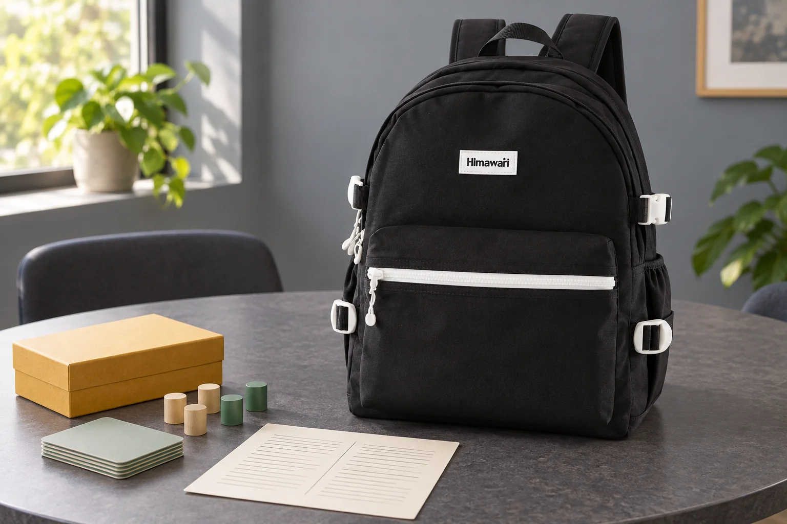

보드게임 모임의 규칙표: 설명서와 우리 모임의 약속 구분하기

보드게임 모임에서 같은 상황을 두고 “지난번에는 이렇게 했는데”라는 말이 나올 수 있습니다. 설명서에서 읽은 내용과 모임에서 편하게 정한 약속이 섞여 기억되기 때문입니다. 카드와 게임 말을 챙기는 날, 지난 모임의 규칙 메모도 한 장 꺼내 확인해 보세요. 출처를 구분해 적어 두면 이번에 무엇을 따를지 함께 정하기 쉽습니다.
어느 설명서를 봤는지 먼저 표시하기
규칙표 맨 위에 게임 이름과 사용 중인 설명서의 언어·판본 등 확인할 수 있는 정보를 적습니다. 설명서에 별도 버전 표기가 없다면 임의로 번호를 만들지 않고 ‘동봉 설명서’처럼 실제 출처를 씁니다. 기억에 남은 문장만 옮기기보다 해당 항목의 이름과 페이지를 함께 적으세요. 새로 온 사람이 같은 설명서를 펼쳐 직접 확인할 수 있는 정도면 됩니다. 규칙표에는 필요한 항목만 요약하고, 자세한 설명은 원문으로 돌아가 읽습니다.
설명서 내용과 모임의 약속을 다른 칸에
한쪽에는 설명서에서 확인한 내용, 다른 쪽에는 모임에서 합의한 약속을 둡니다. 예를 들어 차례 전에 질문을 모아 설명할지, 중간에 물어볼지 같은 진행 약속은 모임 칸에 적을 수 있습니다. 합의한 방식을 적었다고 게임의 공식 규칙이 되는 것은 아니므로 제목도 ‘우리 모임의 약속’으로 붙이세요. 게임 자체의 규칙을 다르게 적용하기로 했다면 어떤 부분을 바꾸었는지와 적용 범위를 명확히 적고, 시작 전에 참가자 모두가 그 내용을 확인합니다.
해결하지 못한 질문은 확정 문장으로 쓰지 않기
설명서를 다시 읽어도 판단이 어려운 상황은 ‘확인할 질문’에 남깁니다. 어떤 차례에서 어떤 선택이 문제였는지 구체적으로 적어야 다음번에 같은 상황을 찾을 수 있습니다. 확인 자료가 있는 게임이라면 제작사나 배급사의 공식 안내를 살펴보고, 실제로 확인한 출처와 날짜를 덧붙이세요. 이 글에서는 특정 게임의 규칙을 대신 해석하지 않습니다. 모임 중 임시로 적용한 결정도 질문 옆에 적되, 확인이 끝난 내용과 구별할 수 있게 ‘이번 모임의 결정’이라고 표시해 둡니다.
새 모임에서는 달라진 약속만 함께 읽기
다음 모임을 시작할 때 지난 규칙표에서 달라진 부분을 확인합니다. 더 이상 쓰지 않는 약속에는 종료 날짜나 취소 표시를 남기고, 현재 적용할 약속이 무엇인지 정리하세요. 바뀐 내용을 같은 종이에 계속 덧붙이기 어려우면 새 표를 만들고 이전 표에 교체 표시를 해도 됩니다. 사진 속 No.9290과 함께 놓은 카드는 가상의 소품입니다. 실제 게임 상자의 크기와 내용물은 제품마다 다르므로 가방에 넣을 준비를 할 때는 사용하는 상자와 보호 방법을 별도로 확인하세요.
참고·안내
- Himawari No.9290 제품 정보
- 실제 Himawari No.9290 원본과 카탈로그 외부 치수 30 × 42 × 18 cm를 참고한 AI 연출 사진입니다. 카드·게임 말·규칙표는 가상의 소품이며 제품 구성품이나 수납 예시의 실측 근거가 아닙니다.
자주 묻는 질문
모임에서 정한 약속도 공식 규칙으로 적어도 되나요?
설명서나 공식 안내에서 확인한 내용과 모임이 합의한 방식은 구분해 적으세요. 모임의 약속에는 적용 범위와 변경 사항을 표시하고 참가자들이 시작 전에 확인하면 됩니다.
규칙을 확인하지 못했을 때 표에는 어떻게 남기나요?
당시의 상황을 질문 형태로 기록합니다. 임시로 적용한 모임의 결정은 별도 표시하고, 이후 실제로 확인한 출처와 내용을 덧붙이세요.